Johnson Solids
The Platonic solids, Archimedean solids, and the regular prisms and antiprisms are vertex-transitive convex polyhedra with regular polygon faces. Vertex transitivity means that for any two vertices of the polyhedron, there exists a translation, rotation, and/or reflection that leaves the outward appearance of the polyhedron unchanged yet moves one vertex to the other. What happens if the vertex transitivity criterion is removed? As it turns out, there are 92 non-vertex-transitive convex polyhedra with regular polygon faces.
In 1966, Norman Johnson published a paper titled "Convex Polyhedra with Regular Faces" where he described in detail all 92 of these polyhedra. He introduced names for those that weren't named previously, and he mentions that there appear to be no more than 92 of them. These 92 polyhedra are currently known as the Johnson solids. In 1967, Viktor Zalgaller proved that there are no more than 92.
In 2008, Aleksei Timofeenko presented analytically-expressed coordinate values for eight of these polyhedra. It seems most of these values were known only up to numerical approximations previously. For two of these polyhedra, the Bilunabirotunda (J91) and the Triangular Hebesphenorotunda (J92), the values have relatively simple expressions and were probably known prior to Timofeenko's work.
Unlike most polyhedra found in these pages, the Johnson solids have relatively low symmetry orders, and only a few are in canonical form, which makes them unsuitable for automatic generation on a computer. I am grateful to Loïs Mignard-Debise, who spent the time to gather the coordinate values for all 92 polyhedra that are presented here.
-
Pyramids
J1 – J2
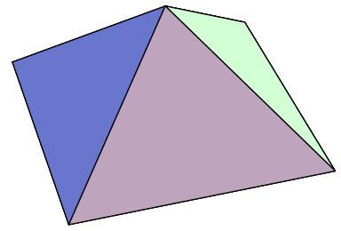Text.
-
Cupola & Rotunda
J3 – J6
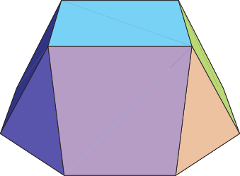The next four Johnson solids are three cupolae and one rotunda. They represent sections of uniform polyhedra.
-
Elongated pyramids
J7 – J11
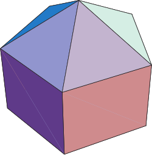In the gyroelongated triangular pyramid, three pairs of adjacent triangles are coplanar and form non-square rhombi, so it is not a Johnson solid.
-
Bipyramids
J12 – J13
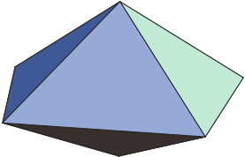The square bipyramid is the regular octahedron, while the gyroelongated pentagonal bipyramid is the regular icosahedron, so they are not Johnson solids. In the gyroelongated triangular bipyramid, six pairs of adjacent triangles are coplanar and form non-square rhombi, so it is also not a Johnson solid.
-
Elongated bipyramids
J14 – J17
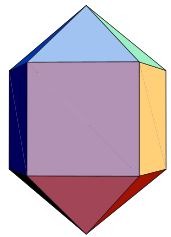Text.
-
Elongated cupolae and rotundas
J18 – J25
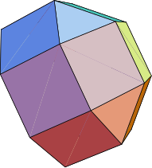Text.
-
Bicupolae
J26 – J31
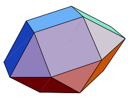Text.
-
Cupola-rotundas and birotundas
J32 – J34
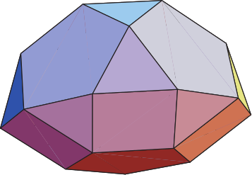The pentagonal gyrobirotunda is an Archimedean solid (in this case the icosidodecahedron), so it is not a Johnson solid.
-
Elongated bicupolae
J35 – J39, J44 – J46
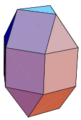Text.
-
Elongated cupola-rotundas and birotundas
J40 – J43, J47 – J48
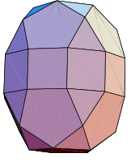Text.
-
Augmented prisms
J49 – J57
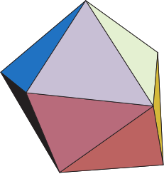Text.
-
Augmented and diminished Platonic solids
J58 – J64
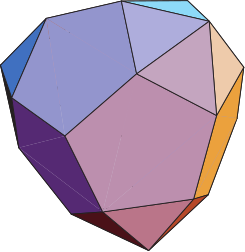Text.
-
Augmented Archimedean solids
J65 – J71
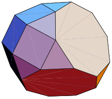Text.
-
Gyrate and diminished rhombicosidodecahedron
J72 – J83
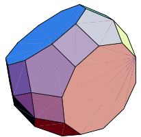Text.
-
Snub antiprisms
J84 – J85
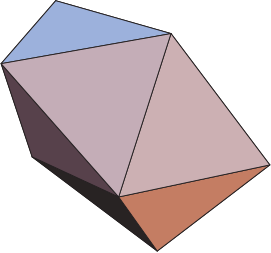The snub antiprisms can be constructed as an alternation of a truncated antiprism. The gyrobianticupolae are another construction for the snub antiprisms. Only snub antiprisms with at most 4 sides can be constructed from regular polygons. The snub triangular antiprism is the regular icosahedron, so it is not a Johnson solid.
-
Others
J86 – J92
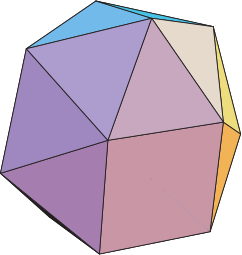Text.